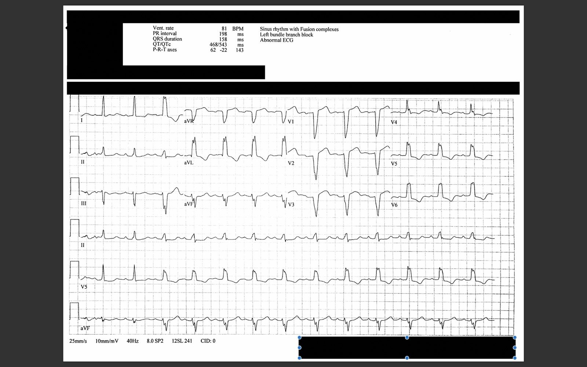
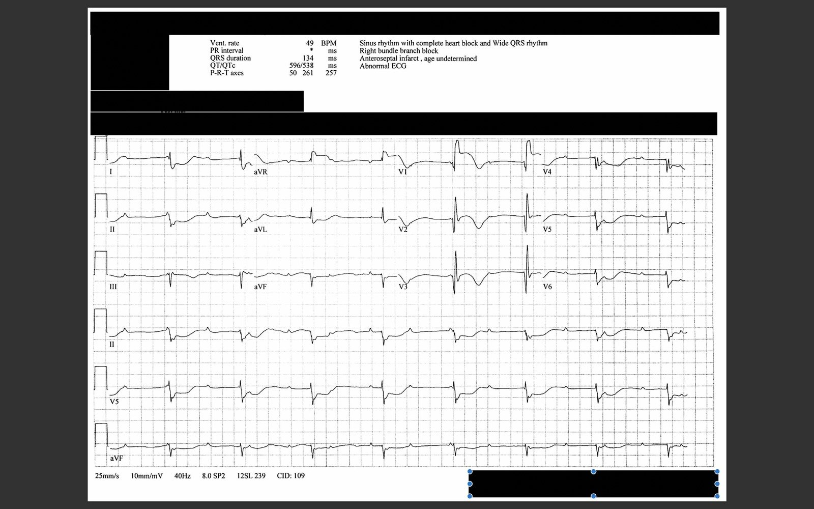

16/12/2017 — Một phụ nữ 70 mấy tuổi bị ngất và phức bộ QRS rộng
Bản dịch tiếng Việt của bài "A 70-something woman with syncope and a wide complex" – Dr. Smith’s ECG Blog. Giữ nguyên toàn bộ 3 hình ảnh của bản gốc.
Ca bệnh này do Andy Lichtenheld (https://twitter.com/ALichtenheld) viết, một bác sĩ nội trú năm thứ 2 rất giỏi tại Chương trình Y học Cấp cứu tại Trung tâm Y tế Hạt Hennepin (Emergency Medicine program at Hennepin County Medical Center) của chúng tôi.
Sau đây là một chút quảng bá không ngại ngùng cho chương trình nội trú của chúng tôi, được thành lập từ năm 1972 và theo chúng tôi là không đâu sánh bằng:
Tìm hiểu vì sao các bác sĩ nội trú hiện nay của chúng tôi chọn Hennepin.
Ca bệnh
Một phụ nữ 70 mấy tuổi có tiền sử bệnh động mạch vành (CAD) được đội cấp cứu ngoài viện (EMS) đưa đến sau một cơn ngất. Bà đang ở tình trạng sức khỏe bình thường thì đột ngột choáng váng và ngã quỵ. Bà tỉnh lại trước khi EMS đến và tới khoa cấp cứu (ED) trong tình trạng lú lẫn nhưng tỉnh dần. Bà không có khó chịu ở ngực, khó thở, đau tay, đau hàm hay bất kỳ triệu chứng nào khác.
Một điện tâm đồ ban đầu được ghi:

Máy tính nhận định đây là nhịp xoang kèm blốc AV Mobitz I và LBBB.
Tuy nhiên, cả nhịp lẫn QRST có vẻ phức tạp hơn.
Nhịp: Có thể thấy các sóng P đều trong suốt dải nhịp. Nếu không dùng compa đo (calipers) và không suy nghĩ nhiều hơn mức cần thiết trong tình huống cấp cứu, khó nói đây là blốc AV độ một hay độ hai với dẫn truyền kèm blốc nhánh trái, hay là blốc tim độ ba (hoàn toàn) với nhịp thoát từ thất phải. Nhát 3 và 5 là PVC.
Smith: Sau khi xem xét kỹ lúc rảnh rỗi, tôi nghĩ đây đúng là blốc tim hoàn toàn với nhịp thoát thất phải, nhưng nó phức tạp.
Còn gì nữa?
Có ST chênh lên ngược hướng quá mức ở V1 & V2. Tỷ số ST/S ở V1 là 5/15 = 33%.
Có ST chênh lên ngược hướng quá mức ở aVR. Tỷ số ST/S là 3/8 = 37%.
Cũng có ST chênh xuống ngược hướng quá mức ở chuyển đạo I (tỷ số ST/R = 100%) và V4 (tỷ số ST/R = ~60%).
Nếu bạn chấp nhận, như Dr. Smith, rằng tiêu chuẩn Sgarbossa cải biên theo Smith có thể áp dụng không chỉ trong LBBB mà cả trong nhịp thoát thất, thì bất kỳ dấu hiệu nào trong số này cũng đáp ứng các tiêu chuẩn đó. ST chênh lên (STE) ở V1 cũng như ST chênh xuống (STD) ở I và V4 đặc biệt đặc hiệu cho tắc mạch.
Hơn nữa, có mức STD bất thường ở V5 và V6 (tỷ số ST/R gần 20%).
Tiêu chuẩn Smith-Sgarbossa cải biên cho LBBB và nhịp tạo nhịp thất
Quy tắc 1: (độ nhạy 80-90%, độ đặc hiệu 95% cho tắc mạch)
Bất kỳ một trong các điều sau:
1. STE đồng hướng 1 mm ở bất kỳ một chuyển đạo nào
2. STD đồng hướng 1 mm ở bất kỳ một chuyển đạo nào trong V1-V3
3. STE ngược hướng ít nhất 1 mm và ≥25% sóng S đi trước ở ít nhất một chuyển đạo
Quy tắc 2: (độ nhạy chỉ 64%, nhưng độ đặc hiệu 98% cho tắc mạch)
Bất kỳ một chuyển đạo nào có STE hoặc STD ngược hướng xét theo tỷ lệ, ít nhất 30% sóng R hoặc sóng S đi trước
Bình luận của Smith:
Thêm một dấu hiệu nữa!! PVC!!!! Nhát thứ 5 là một PVC và có hình thái RBBB (sóng R lớn ở aVR với sóng S rộng ở V5). Điều này hàm ý PVC xuất phát từ thất trái. PVC hình thái RBBB không bao giờ được có đoạn ST đồng hướng với QRS, như ở chuyển đạo aVR tại đây. Điều này có giá trị chẩn đoán STEMI.
Xem các ca sau:
STEMI Seen Best in PVC, Diagnosed by Medic, Ignored by Physician (STEMI thấy rõ nhất ở PVC, được nhân viên cấp cứu chẩn đoán, bị bác sĩ bỏ qua)
Look at the PVCs!! (Hãy nhìn vào các PVC!!)
Look at the PVCs (again)!! (Hãy nhìn vào các PVC (lần nữa)!!)
Ca bệnh tiếp diễn
Lấy được một điện tâm đồ cũ:


Bình luận của Smith: Tôi vẫn chưa hoàn toàn chắc chắn điện tâm đồ đầu tiên là nhịp trên thất kèm blốc nhánh trái, hay là nhịp thoát thất phải. Nhưng điều đó không quan trọng: bệnh nhân bị tắc mạch vành cho đến khi chứng minh được điều ngược lại. Bà cần dán miếng dán tạo nhịp ngay lập tức và chụp mạch vành/PCI.
Ca bệnh tiếp diễn
Các bác sĩ điều trị cho bệnh nhân lo ngại một tình trạng tắc mạch vành cấp. Bác sĩ tim mạch đang có mặt tại bệnh viện và được gọi đến khu hồi sức. Trong vài phút sau đó, bệnh nhân dần hồi phục về trạng thái tâm thần bình thường. Bà vẫn có huyết áp bình thường và hoàn toàn không triệu chứng.
Khi bác sĩ tim mạch đến, ghi nhận có thay đổi hình thái QRS trên monitor và một điện tâm đồ ghi lại được thực hiện:


Lúc này chắc chắn có blốc tim hoàn toàn với nhịp thoát thất:
–Hình thái QRS chiếm ưu thế lúc này là RBBB + LAFB xen các PVC, cho thấy ổ thoát chiếm ưu thế lúc này nằm ở phân nhánh trái sau.
–ST chênh lên ở V1 và V2 kèm ST chênh xuống soi gương lúc này đã rõ ràng. Đây là hình thái RBBB với ST chênh lên đồng hướng với sóng R, tương tự PVC đã nêu ở trên. Điều này không xảy ra nếu không có thiếu máu cục bộ.
–Có ST chênh xuống rõ ở chuyển đạo II, giảm bớt ở aVF và rồi hoàn toàn không còn ở chuyển đạo III.
Bình luận của Smith: Động mạch gây nhồi máu là động mạch nào??? Với STE ở V1 và aVR, người ta có thể nghĩ đây là LAD hoặc thân chung động mạch vành trái. Kết luận như vậy sẽ phù hợp với ST chênh xuống lan tỏa.
Trục ST hướng đúng về phía aVR, đó là điều bạn mong đợi khi có thiếu máu cục bộ dưới nội tâm mạc lan tỏa (vectơ ST chênh xuống hướng về I và II, với vectơ ST chênh lên soi gương hướng về aVR). Tuy nhiên, ST chênh lên rõ rệt hơn nhiều so với ST chênh xuống.
Có điều gì khác đang diễn ra chăng??
Andy Lichtenheld viết: “Điều này cũng phù hợp với nhồi máu cơ tim thành dưới và nhồi máu thất phải (RV MI) diện rộng do tắc RCA đoạn gần.”
Ca bệnh tiếp diễn:
Troponin I ban đầu tăng ở mức 4.5 ng/mL.
Bà được đưa vào phòng thông tim (cath lab), tại đây tổn thương hẹp 90% ở RCA đoạn gần, nằm phía gần so với nhánh bờ thất phải, được đặt stent và một máy tạo nhịp tạm thời được đặt.
Siêu âm tim ngày hôm sau cho thấy chức năng thất trái rất kém với rối loạn vận động thành dưới.
Bình luận của Smith:
Vậy là Dr. Lichtenheld đã đúng. Đó là STEMI thành dưới + thất phải (RV).
Hình ảnh ST chênh lên và chênh xuống này thường do LAD hoặc thân chung động mạch vành trái.
Tôi không thể giải thích đầy đủ vì sao không có ST chênh lên ở các chuyển đạo thành dưới, đặc biệt là chuyển đạo III.
Xem ca này:
Septal STEMI with ST elevation in V1 and V4R, and reciprocal ST depression in V5, V6 (STEMI vách với ST chênh lên ở V1 và V4R, và ST chênh xuống soi gương ở V5, V6)
Thêm về điện tâm đồ trong nhồi máu cơ tim thành dưới và thất phải:
http://hqmeded-ecg.blogspot.com/2014/05/inferior-and-posterior-stemi-what-else.html (STEMI thành dưới và thành sau: còn gì nữa?)
http://hqmeded-ecg.blogspot.com/2014/03/the-ecg-told-whole-story-but-no-one.html (Điện tâm đồ đã kể toàn bộ câu chuyện nhưng không ai…)
Sau đây là bình luận của Ken Grauer:
Diễn giải điện tâm đồ
Một ca bệnh hấp dẫn, mà có lẽ chúng ta sẽ không bao giờ biết chắc cơ chế của các nhịp. Tôi xin đưa ra vài suy đoán. Tôi ngờ rằng điện tâm đồ #1 không phải blốc AV hoàn toàn — vì đáp ứng thất không đều rõ rệt. Trong phần lớn các trường hợp blốc AV hoàn toàn — đáp ứng thất sẽ đều hơn. Chúng ta thấy điều này ở điện tâm đồ #3, trong đó rõ ràng CÓ blốc AV hoàn toàn. Quay lại điện tâm đồ #1 — nhịp nhĩ KHÔNG đều. Lúc đầu, sóng P bị vùi trong đoạn ST của vài nhát đầu tiên. Nếu dò theo các sóng lệch nhĩ cẩn thận bằng compa đo — khoảng P-P thay đổi theo cách khó dự đoán ở một số phần của bản ghi. Điều này có thể xảy ra khi nhồi máu nhĩ, dù thực sự chúng ta không thấy đoạn ST của sóng P lệch khỏi đường đẳng điện … Hình thái QRS ở điện tâm đồ #1 theo tôi phù hợp với LBBB (dù có nhiều phân mảnh) — với nhát #3 và #5 là PVC. Như Dr. Smith nói — tình huống cực kỳ phức tạp. Tôi ngờ rằng có thể có Wenckebach không điển hình (khoảng PR tăng dần tới khá dài về cuối bản ghi) — dù tính chu kỳ của khoảng R-R rõ ràng không điển hình. Điều HIỂN NHIÊN (như Dr. Smith nói) — là hình thái sóng ST-T mà chúng ta thấy ở điện tâm đồ #1 là bất thường bất kể nguồn gốc của phức bộ QRS. Bất thường sóng ST-T này ở điện tâm đồ #1 đã được khẳng định khi có được bản ghi LBBB nền. LƯU Ý — 2 nhát đầu tiên ở điện tâm đồ #2 dẫn truyền với phức bộ QRS HẸP — điều này gợi ý rằng điện tâm đồ “nền” của bệnh nhân này có LBBB liên quan tần số! Tôi tin rằng giả thuyết đó được khẳng định ở điện tâm đồ #3, mà như Dr. Smith nói, lúc này chắc chắn CÓ cho thấy blốc AV hoàn toàn — với nhịp thoát đều và hoạt động nhĩ lúc này rõ ràng đều hơn nhiều so với ở điện tâm đồ #1. Tôi tin rằng có thể chúng ta có nhịp thoát nút AV (bộ nối) ở điện tâm đồ #3 — vì tần số thoát là ~50/phút, và hình thái QRS trông RẤT giống trên thất do có hình thái RBBB khá rõ ở các chuyển đạo trước tim và sóng lệch ban đầu sắc/hẹp ở các chuyển đạo bên với sóng S tận rộng. Tần số tim chậm hơn — nên LBBB liên quan tần số lúc này đã hết. Chúng ta còn lại hình ảnh ST chênh lên rõ ở V1,V2,V3 — với ST chênh lên tối đa ở chuyển đạo V1. Như Dr. Lichtenheld đã tinh ý chỉ ra — hình ảnh này phù hợp với nhồi máu thất phải cấp đơn độc! Cần lưu ý — hầu như tất cả các chuyển đạo khác trên điện tâm đồ #3 cho thấy ST chênh xuống dạng lõm (scooped) đáng kể (thực ra là hình dạng “soi gương” (mirror-image) ngược với ST chênh lên dạng vòm ở V1,V2,V3 — vì vậy tôi nghĩ rằng ngoài nhồi máu thất phải cấp — còn có thiếu máu cục bộ dưới nội tâm mạc lan tỏa. Tuy nhiên, lưu ý rằng CÓ gợi ý ST dạng vòm ở chuyển đạo III trên điện tâm đồ #3, cũng như ST chênh xuống tương đối ÍT HƠN ở chuyển đạo aVF — vậy có lẽ lý do chúng ta không thấy ST chênh lên ở các chuyển đạo thành dưới là vì về cơ bản nó đã bị triệt tiêu bởi ST chênh xuống do thiếu máu cục bộ dưới nội tâm mạc lan tỏa thấy ở hầu như tất cả các chuyển đạo khác ngoại trừ V1,2,3? Cuối cùng — Nếu quay lại điện tâm đồ #1 (khi có BBB liên quan tần số) — thực ra chúng ta CÓ thấy cùng kiểu lệch đoạn ST như ở điện tâm đồ #3 — với điểm khác biệt là các độ lệch ST này ở điện tâm đồ #1 bị che lấp một phần bởi LBBB liên quan tần số ở nền. Tức là, ST dạng vòm rõ ở chuyển đạo III, ST chênh lên ở V1,2,3 — và ST chênh xuống ngoạn mục (vượt quá mức dự kiến đối với LBBB) ở tất cả các chuyển đạo khác. Ca bệnh TUYỆT VỜI! Cảm ơn đã trình bày!